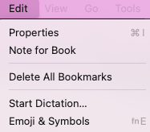

Note for book
After a book is imported, a note can be attached to it. The option is under the Edit menu:

The edit screen is very simple:
This will keep any note you wish on this particular book. The editing allows for simple Markdown tags.
Some HTML tags can also be used, such as bold, center or italic.
Note per-page
Future feature - Not currently implemented.
Every page can have a note attached to it. this can be useful for annotation of settings used to setup instrument for a particular
piece or page. The note will have a small display on the lower left of the status bar if there is a note for the current page.
Creation is by selecting the option under Tools:
image to go here.
The note will be created and, if you move the note within a pages boundry, it will be displayed there. A note, when displayed,
will be a frameless
Each note can have one of two modes:
- Show floating on the page in the last position seen.
- Do not show unless opened, by clicking the icon in the status bar. This does not open it for editing.